Innlegg
Årets sommerfestival var en kjempehit!
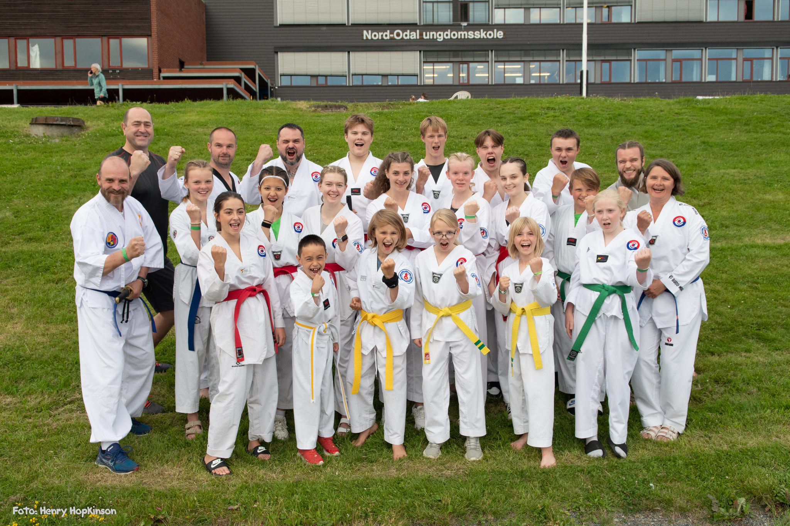
Etter to med pandemi var det endelig igjen klart for Traditional Taekwondo Unions (TTU) sommerfestival. Sommerfestivalen er et arrangement på nesten en uke med trening, overnatting og sosial hygge med gamle og nye vennskaper. I var sommerleiren lagt til Nord-Odalen og arrangert av Kunja Taekwondo. Vi var hele 25 deltakere i alle aldre, inkludert foreldre, fra Ringerike, og var den klubben med flest deltakere. Sommerleiren hadde ca 230 deltakere totalt. Leiren i år hadde utrolig mye å by på, blant annet en mengde taekwondo-treninger med forskjellige tema, shotokan karate, koreansk dans, koreansk matlaging, yoga, taekkyon, kyongdang og mye mer!
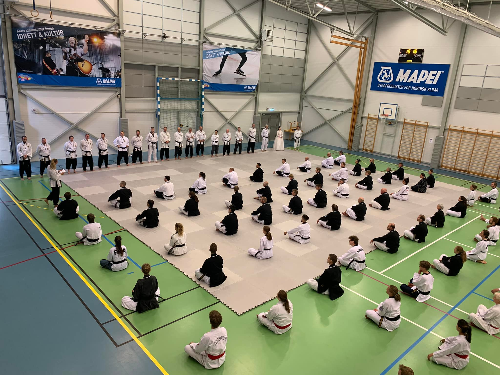
Fellestrening og presentasjon av master-instruktører Det har vært mye trening for utøvere i alle aldre, også foreldrene har fått kjørt seg! Årets høydepunkt for oss i Ringerike var Mastergraderingen til Artsiom Stalmakou. Artsiom graderte til 4. dan sort belte på leiren, og er dermed master i Taekwondo. Det er alltid en stor begivenhet når vi får nye mastere i klubben, og alle som kjenner Artsiom veit at dette er vel fortjent, vi gratulerer! Nå har vi fire mastere i klubben: Yebio Fecadu, Geir Karlsen, Anders Stiksrud Helmen og Artsiom Stalmakou. Som om ikke det var nok ble Reinhard kåret til årets mannlige utøver i TTU! Vi gratulerer!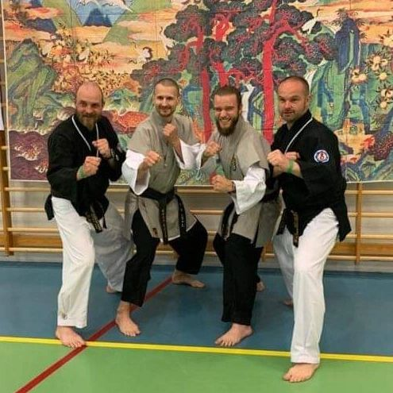
Artsiom etter ferdig Dan-seremoni. Endelig master! Leiren foregikk på et Garvik skole, en skole som ligger rett ved Storsjøen og med tilknyttet idrettshall hvor det meste av treningen foregikk. Utøverne fra fikk utdelt egne klasserom for overnatting, noen lå i telt, og noen på camping. Hver dag kunne en trene opp til 4-5 fem ganger og velge mellom forskjellige tema. Noen ganger trente en med andre med lik grad og alder, andre ganger var det delt opp i tematrening.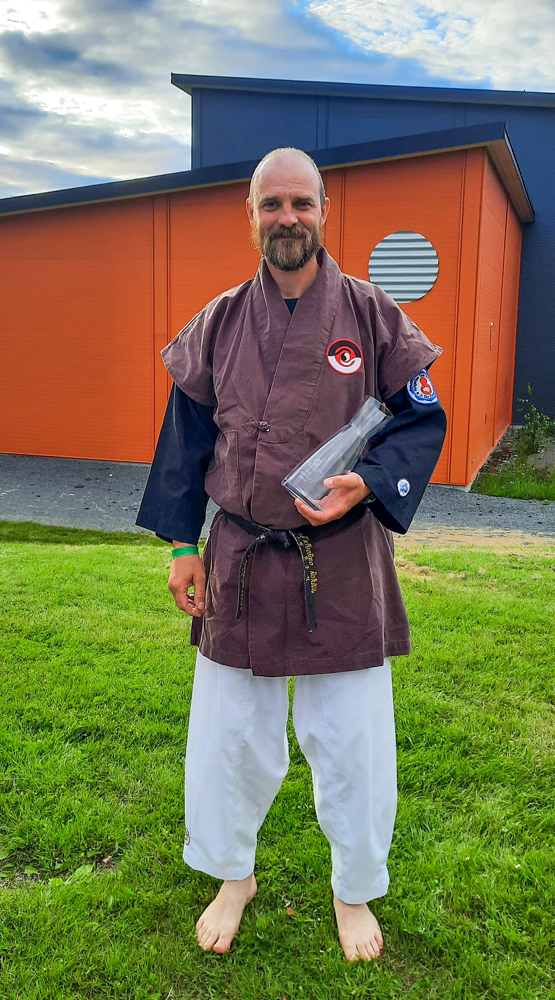
Reinhard vinner årets mannlige utøver Frokost, lunsj, middag og kveldsmat var inkludert og sørget for at alle fikk påfyll fra den harde treningen. Ellers var det også tid til å bli bedre kjent med medlemmene i egen klubb mellom øktene eller diskutere med gamle og nye kjente fra andre klubber rundt om fra inn- og utland. I år var utøvere Norge, Sverige, Danmark, Frankrike og India representert på leiren. På kveldene var det plass rundt bålet, i klasserommene eller rundt teltene for hygge. Og var man riktig morgenfrisk var det mulig å trene Sim Ki Shin (pustefokusert gymnastikk som ligner litt på yoga) med Grandmaster Cho Won Sup hver morgen klokken 07:00. Vi var en skikkelig god gjeng fra Ringerike i år, men vi har plass til mange mer! Bli med neste år, det vil du ikke angre på!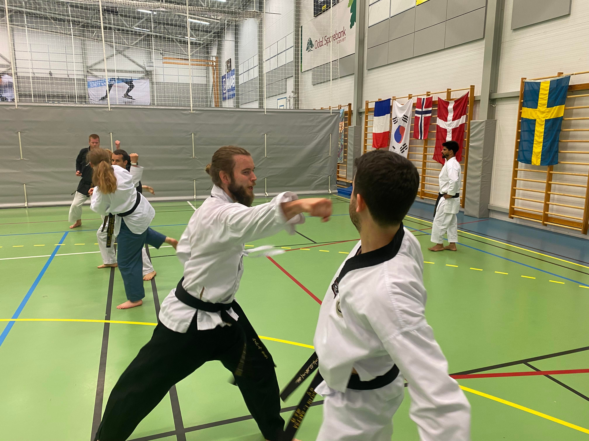
Avtalt kamp i karatetreningen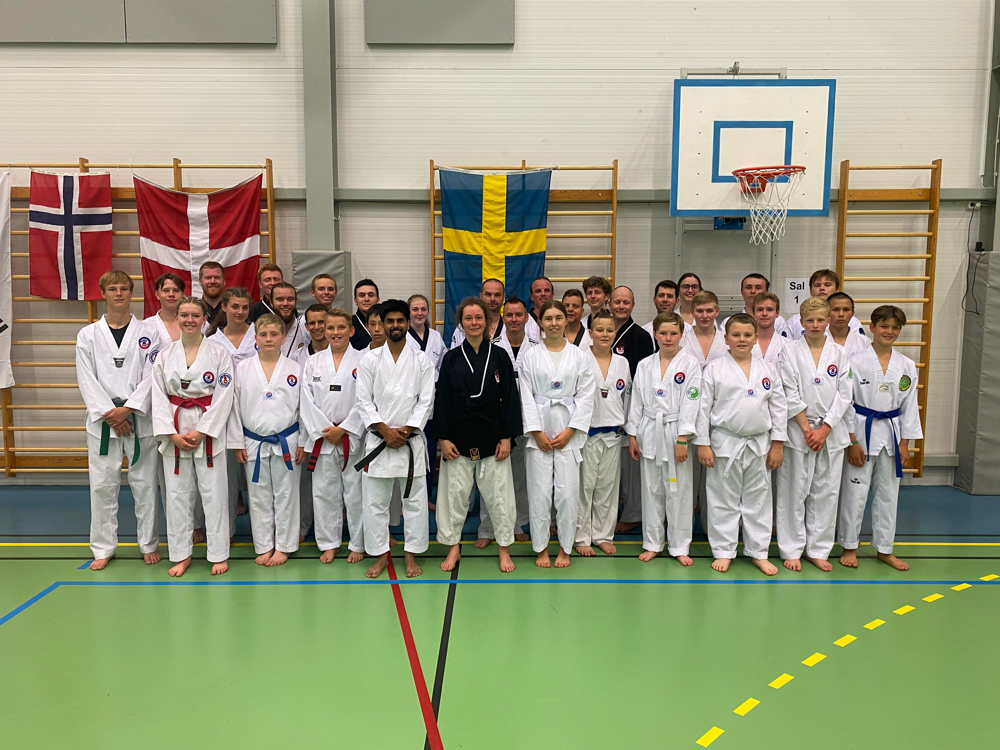
Gjengen som trenge shotokan karate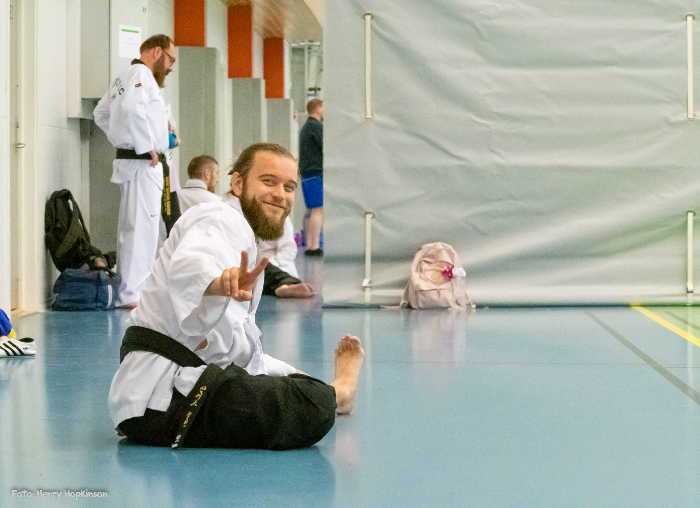
Litt tøying mellom øktene...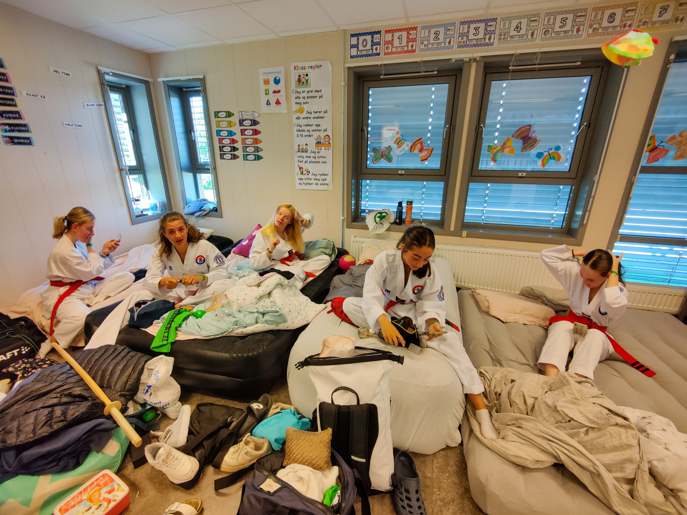
Klasserommet til Ringerike, jentene gjør seg klare til trening!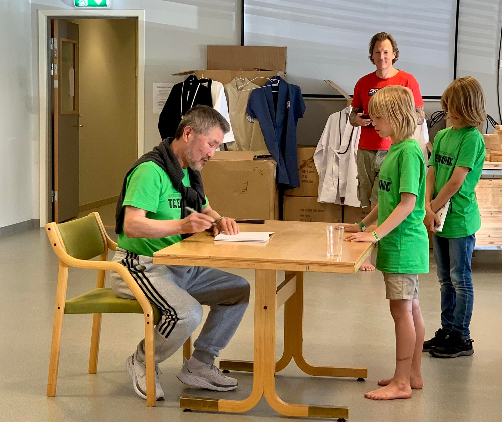
Boksignering med GM Cho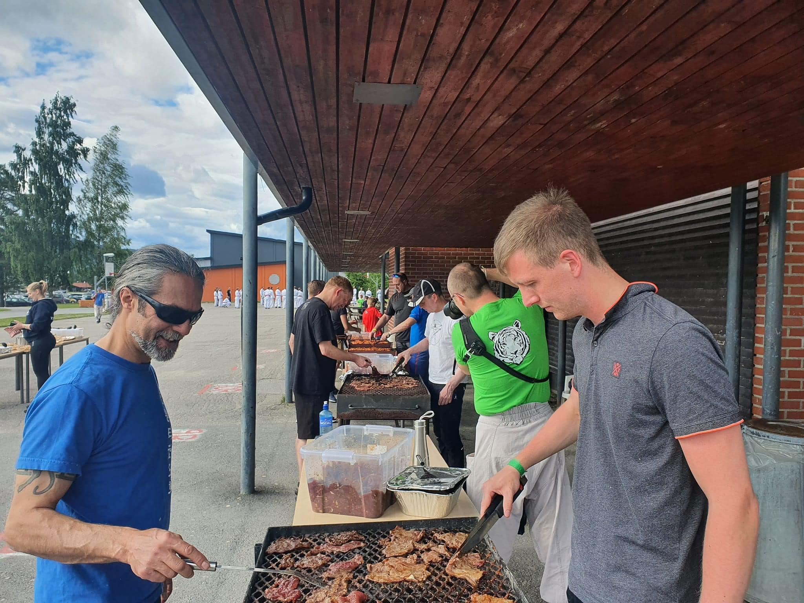
Grilling av koreansk mat med masterne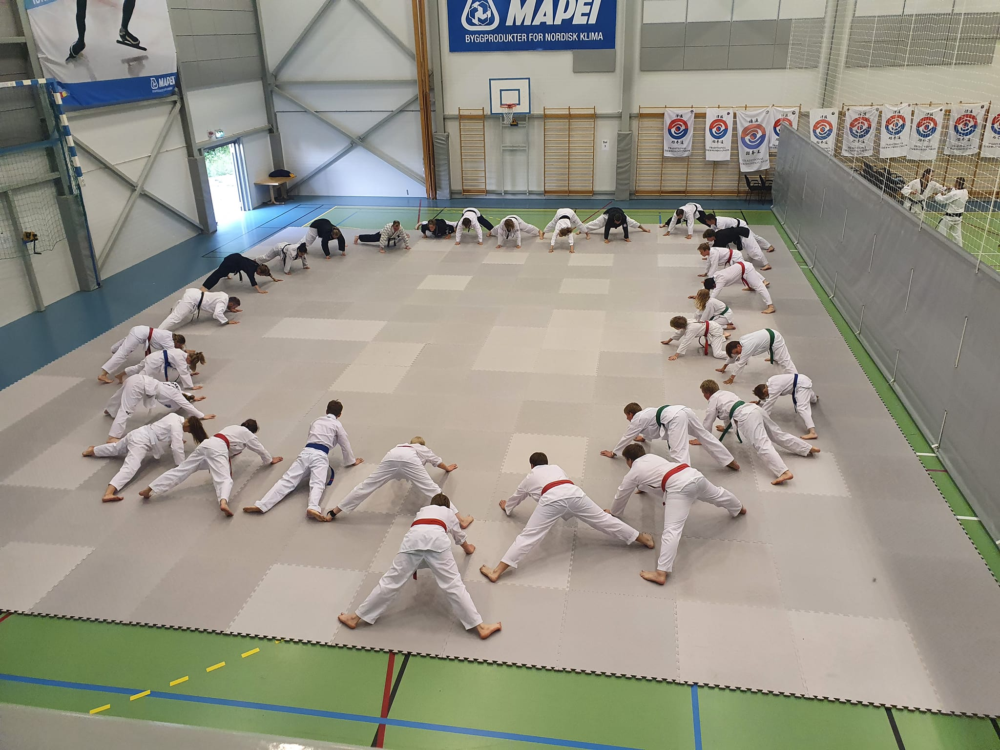